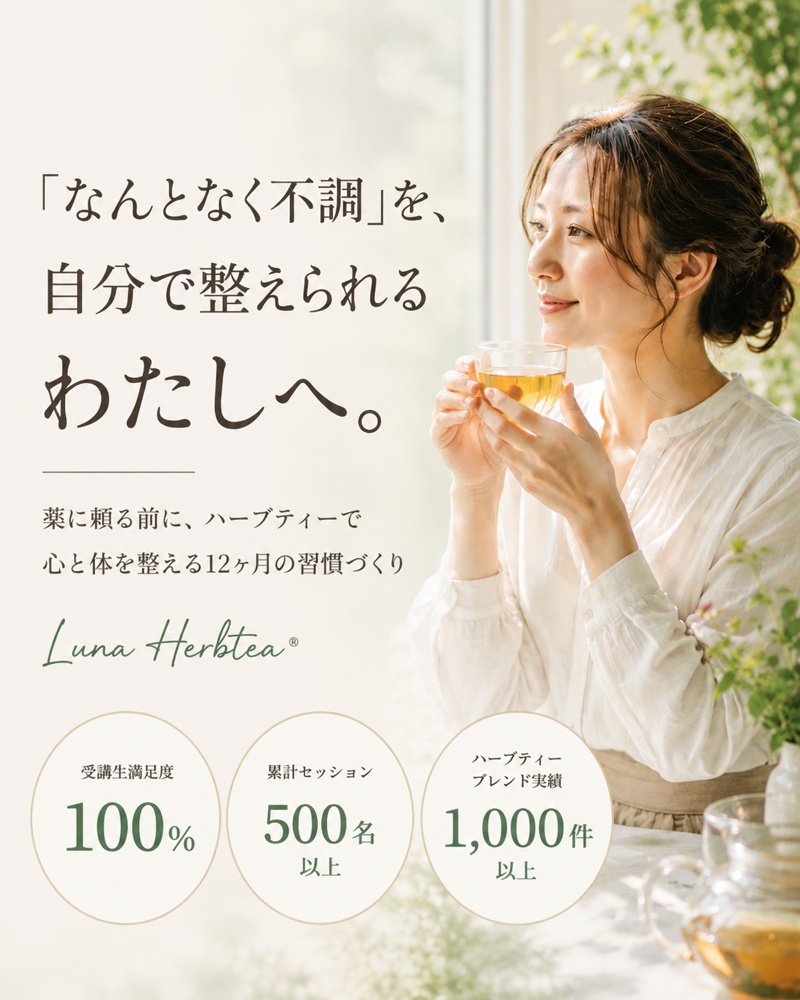
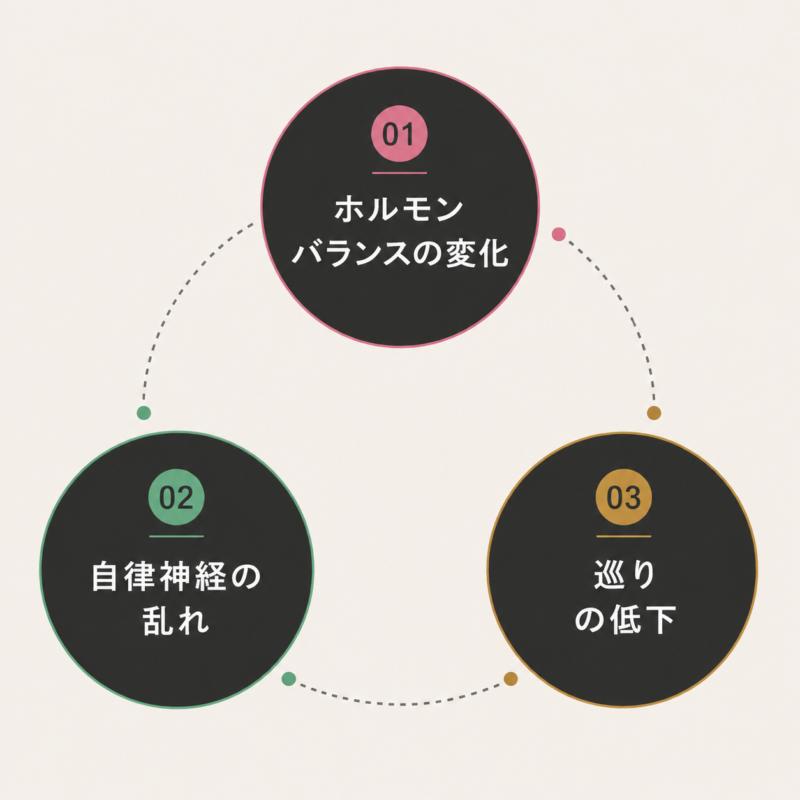

更年期セルフケア 無料カウンセリング実施中
毎月先着2名限定
「なんとなく不調」、
我慢していませんか？
病院に行くほどじゃない。
でも、確かに感じている体の違和感。
- 朝起きても疲れが取れない
- 夜、なかなか眠れない
- 理由もなくイライラしてしまう
- ホットフラッシュで突然汗が止まらない
- 手足の冷え、むくみが気になる
- PMSで毎月つらい
「歳のせいかな」
「みんなそうだよね」
そう思って、やり過ごしていませんか？
その
「なんとなく」を
放っておくと…
最初は違和感程度でも、放置するほど悩みは深くなります。
「なんとなくの不調」が、やがて病気につながることも。
更年期の症状がひどくなったり、心のバランスを崩してしまうケースも少なくありません。
その不調、
原因は３つあります。
「なんとなくの不調」には、主に3つの要因が重なっています。

ひとつだけではなく、複数の変化が重なって
心と体のサインとして現れます。
ホルモンバランスの変化

女性ホルモン（エストロゲン）は年齢とともにゆるやかに変化。 心と体に深く関わるため、変化の時期には不調を感じる方も少なくありません。
自律神経の
バランスの乱れ

交感・副交感神経のスイッチがうまく切り替わらなくなる。 「疲れているのに休めない」「眠りたいのに眠れない」など。
巡り（気・血・水）の低下

40代以降、毛細血管は最大で約40%が消失。 冷え、むくみ、便秘——巡りの滞りが、さまざまな不調として現れます。
その3つを、自然の力で整える方法、
それがハーブティー。
ハーブティーには、心と体にやさしく働きかける力があります。
ゆらぎに
タイムに
セルフケア習慣に
など、目的や気分に合わせて美味しくブレンド。
しかも

忙しい毎日でも、無理なく続けられるのが魅力です。
「頑張って続ける」ではなく
美味しさや香りを楽しみながら、自然に続けられる。
そして、何より大切なのは
「今の自分に合ったハーブ」を知ること。
今の自分の状態にやさしく寄り添いながら、
暮らしの中に少しずつ取り入れていく。
それが、無理なく続けられる
心地よいセルフケアにつながっていきます。

でも、「自分に合うハーブ」って
どうやって見つけるの？
あなたの体と心に
寄り添う1年間
それを一緒に見つけて、自分でブレンドできるようになるのが
「月と巡る12ヵ月講座」です。
この講座は、ハーブの知識をただ学ぶ講座ではありません。
「今のあなたの体の状態に気づき、自分で整えられるようになる」ための講座。
更年期の不調は人それぞれ違います。
だからこそ、"正解"ではなく「あなたに合う整え方」を見つけて実践していきます。
なぜ、Luna Herbteaの受講生は
「自分で整えられる」
ようになるのか
ハーブティーの講座は他にもあります。
でも、多くの講座は「知識を覚えること」がゴール。
Luna Herbteaが大切にしているのは、
「一時的」ではなく「一生使える習慣」にすること。
講座
Herbtea
知識を詰め込むのではなく、
その日の体調や心の状態に気づき、
"今の自分に合う整え方"を選べるようになること。
だから、受講後も自然と続けられる。
選ばれる3つの理由
「なんとなくの不調」に
寄り添うプログラム
一般的なハーブ講座は、ハーブの種類や効能を幅広く学びます。
Luna Herbteaは、ゆらぎ世代の「なんとなく不調」に寄り添うことを大切にしています。
疲れやすさ、眠りの浅さ、冷え、ホットフラッシュ…
病院に行くほどではないけれど、毎日を少しつらくする不調に、
今のあなたに合ったハーブ習慣を身につけることができます。

美味しい・香り・余韻。
五感で楽しむブレンド
「体にいいけど、美味しくない」
それでは、続けることが苦しくなってしまいます。
Luna Herbteaでは、美味しさ、香り、余韻を大切にした
オリジナルブレンドづくりを学びます。
毎日の一杯が、ただ飲むだけではなく
「自分を整える、ほっとする時間」へ変わっていきます。

続けやすい
個別サポート
毎月のグループレッスンに加え、LINE個別相談は無制限。
「今の私には、どんなハーブが合う？」
そんな日々の小さな悩みも気軽に相談できます。
- ハーブは1gから購入可能
- アーカイブ動画で復習OK
- 自分のペースで学べる
忙しい方でも、無理なく続けられる環境を整えています。
ハーブティーを始めた
人の変化
数字で見える安心感
満足度
ブレンド実績
セッション
数字で見える変化は、
安心して相談できる理由のひとつです。
実際に学んだ方の
声をご紹介します。

ずっと「なんとなく不調」をやり過ごしていた私が、
今の私に必要なことが見えるように。
自分の不調が言葉になって、「これなら自分でもやってみよう」と前向きになれました。

毎日首に湿布、週1回整体だったのが、
1ヶ月もしないうちに気にならなくなりました。
偏頭痛も和らいで、毎日すごく前向きに過ごせています。

受講3ヶ月目くらいから、
「あ、変わってきた」と自分でも感じるように。
その様子を見た主人もハーブティーに興味を持ってくれるように。今では一緒に楽しみながら健康に。

自分のためのケアが、
家族みんなの楽しみに変わりました。
教わったことを、子どもと一緒にハーブティーを飲む時間にも取り入れています。
※すべて個人の感想であり、効果を保証するものではありません
＼ 「このままでいいのかな…」と感じたら ／
まずは無料カウンセリングで
今のあなたに合う整え方を
一緒に見つけましょう
毎月先着2名限定
無料カウンセリングに申し込む
SPECIAL GIFT
更年期セルフケア
無料カウンセリング特典
- 健康美人チャート診断
- 今の体質・不調傾向・心の状態チェック
- 「今の自分」に必要な整え方がわかります
「月と巡る12ヵ月講座」
あなたの体と心に
寄り添う1年間
始まりの季節
自分の体を知る
月ごとのテーマに沿って、季節と体の変化に合わせた整え方を身につけていきます。
深める季節
ハーブと仲良くなる
自分に合うブレンドを見つけ、日常に取り入れる習慣を育てます。
実りの季節
変化を感じはじめる
体の変化に気づき、自分で選んで整える力が育っていきます。
仕上げの季節
一生使える習慣に
12ヶ月後には、どんな不調にも「まず自分で整えてみよう」と
思える自分になっています。
ONE YEAR JOURNEY
季節をめぐるたび、
体の声に気づける私へ。
INCLUDES
- 毎月1回のグループレッスン
- 個別LINE相談 無制限
- 季節に合わせたハーブ
- 会員限定サイト
- ハーブ購入サポート（1gから）
※講座の詳細・費用は無料カウンセリングで丁寧にご説明します
※認定講師制度もございます
まずは画面越しに、
今の状態を
一緒に整理しましょう

Zoomまたは対面で、今のお悩みや体の状態を丁寧にお聞きします。
講座に申し込む前に、
「今の自分には何が必要そうか」を
安心して整理できる時間です。
不調の"正体"を言葉にする
なんとなく感じていた不調を、言葉にして整理できるようになります。
今の体質・心の状態をチェック
健康美人チャート診断で、体質・不調傾向・心の状態を一緒に見ていきます。
今日からできる整え方を知る
「何をすればいいかわからない状態」から、「これならできそう」に変わる時間になります。
「まずは相談だけ」という方も安心してお話しください。
4ヶ月で体重は7kg減。
脂肪肝もC判定→A判定へ。
薬に頼る毎日から、
「自分を整える習慣」へ。

差し替え予定 実写真が届いたらここに配置
差し替え予定 実写真が届いたらここに配置
以前の私は、毎日たくさんの薬を飲んで、
不調をごまかして頑張る毎日でした。
いつの間にか健康診断では 脂肪肝C判定。
「このままじゃいけない」
そう思いながらも、どうしたらいいかわからない。
不調を我慢して、後回しにする日々が
続いていました。
そんな時に出会ったのが、ハーブティーでした。
ハーブティーが日常の習慣になると、
「体のSOSに耳を傾ける時間」ができました。
今では——
20錠近く飲んでいた薬も、飲まない生活に。
4ヶ月で体重は7kg減。
脂肪肝もC判定 → A判定へ。
花粉症や偏頭痛も和らぎ、
気づけば口内炎もできなくなりました。
今、なんとなく不調を感じながらも、
「どう整えたらいいかわからない」
「毎日を頑張りすぎてしまう」
そんな女性へ。
この講座では、ハーブティーを通して、
自分の体とやさしく向き合う時間をお届けしています。
あの頃の私のように悩んでいる方が、
少しでも笑顔で、自分らしく過ごせるように。
それが、私の願いであり、
この講座をつくった理由です。

栗田 順子
ハーブティーで健康美人に導く専門家
- 受講生数 55名
- 累計セッション 500名以上
- ハーブティーブレンド実績 1,000件以上
- 受講生満足度 100%
- リピート率 80%
よくあるご質問
「このままでいいのかな…」
その気持ちが、
変わるきっかけです。
少し意識を向けるだけで、体はちゃんと応えてくれます。
講座を受ける受けないの前にまずは無料カウンセリングで、
今のあなたの状態を一緒に整理してみませんか？
更年期セルフケア 無料カウンセリング特典
- 健康美人チャート診断
- 今の体質・不調傾向・心の状態チェック
- 「今の自分」に必要な整え方
毎月2名限定 ／ 満席になり次第終了
1時間 ／ Zoom or 対面
＼ 無料カウンセリングに申し込む ／